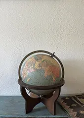
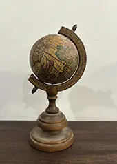
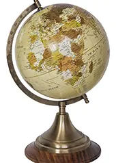
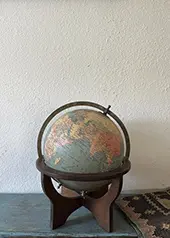
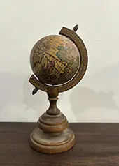
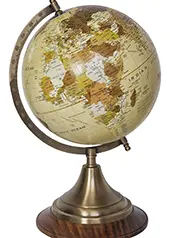

Diese alten Globen sind faszinierende Zeugnisse historischer Weltbilder und handwerklicher Präzision. Mit ihren vergilbten Karten, feinen Beschriftungen und der charakteristischen Patina erzählen sie von Entdeckungsreisen, politischen Veränderungen und dem damaligen Verständnis der Welt.
Ob als dekoratives Sammlerstück, stillvoller Blickfang im Wohnraum, oder woanders, antike Globen vereinen Bildung, Design und Geschichte auf besondere Weise. Jedes Stück ist ein Unikat und lädt dazu ein, die Welt aus einer vergangenen Perspektive zu betrachten.
Bei uns ist jedes Stück ein Unikat und gibt es deswegen nur einmal. Dennoch haben wir im Moment eine Auswahl an alten Waagen bei uns im Laden, da sich die Auswahl aber ständig verändern kann, bitten wir euch, immer wieder vorbeizuschauen